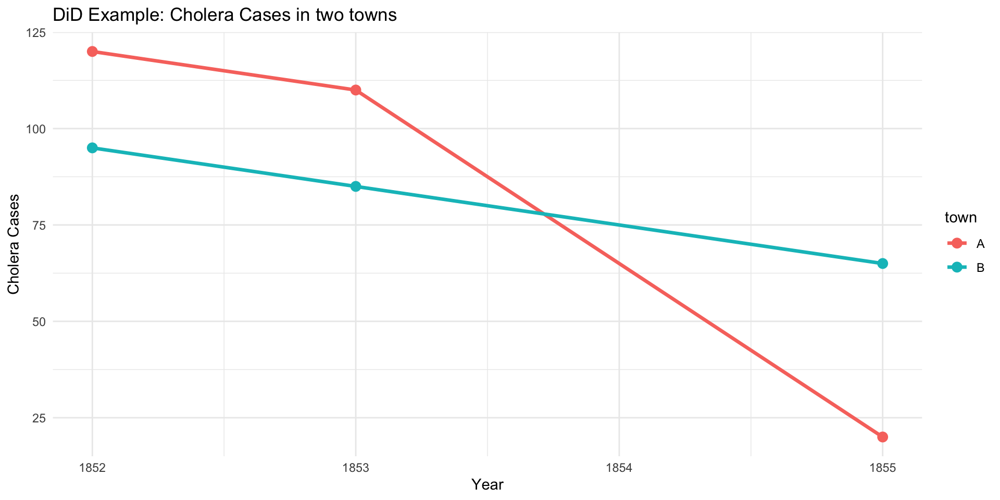
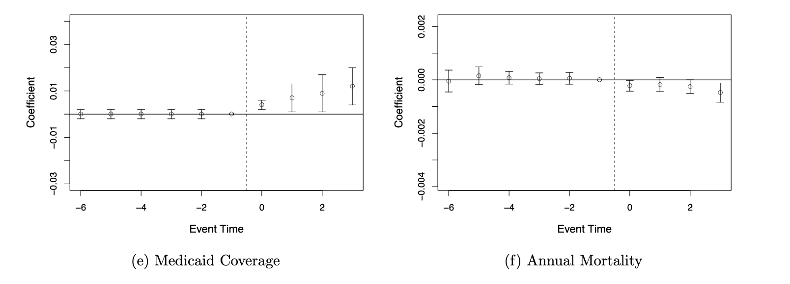
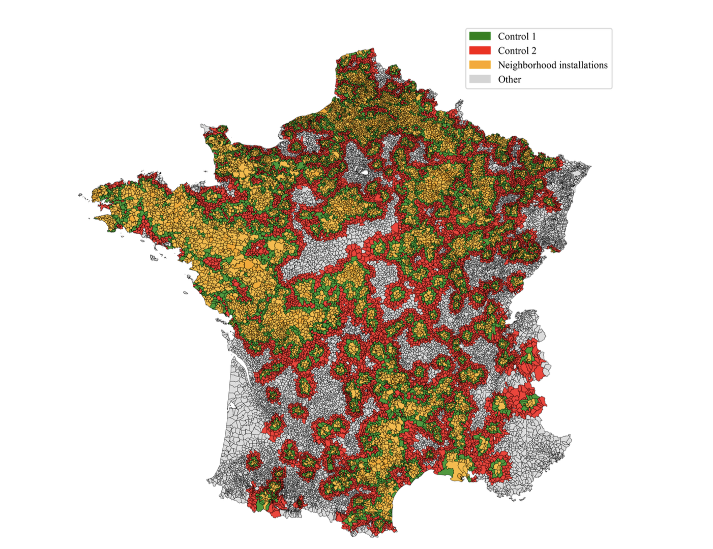

# A tibble: 1,196 × 10
year id_news after_national local treat_group ra_cst ps_cst qtotal
<fct> <fct> <fct> <fct> <fct> <dbl> <dbl> <dbl>
1 1960 1 0 1 0 52890272 2.29 94478.
2 1961 1 0 1 0 56601060 2.20 96289.
3 1962 1 0 1 0 64840752 2.13 97313.
4 1963 1 0 1 0 70582944 2.43 101068.
5 1964 1 0 1 0 74977888 2.35 102103.
6 1965 1 0 1 0 74438248 2.29 105169.
7 1966 1 0 1 0 81383000 2.31 126235.
8 1967 1 0 1 0 80263152 2.88 128667.
9 1968 1 0 1 0 87165704 3.45 131824.
10 1969 1 0 1 0 102596384 3.28 132417.
# ℹ 1,186 more rows
# ℹ 2 more variables: ra_cst_div_qtotal <dbl>, post_treatment <dbl>Methods for Research and Policy Evaluation
Session 4 : Difference-in-differences
Paul Servais
We saw in previous sessions
- How to describe variables : descriptive statistics
- How to infer from sample to larger population : statistical inference
- How to analyse relations between variables :
- When DV is continuous:
- Indep. variable = categorical : t-test e.g. Urban/rural on median income
- Indep. variable = continuous : linear regressions e.g. Far-right vote share in communes and income
- When DV is continuous:
Can you derive causal claims ?
- You can control for variables but…
- Endogeneity
- Omitted variable bias
- Reverse causality
Causal inference
\(X \rightarrow Y\)
Need for so-called identification strategy
Many different strategies :
- Difference-in-differences (today)
- Regression discontinuity
- Instrumental variables
Difference-in-Differences
- Causal inference of observational data
- Based on event study
- Regression technique
- Compare two groups (control vs treatment)
- Compare Pre and Post treatment
- Need for panel data \(Y_{it}\)
Event-study
- How does an event impact an outcome ? Compared with a reference

The Cholera case
- The control and treatment only need to evolve in parallel in pre-treatment

Difference-in-Differences

The ATT
- ATT = average treatment effect on the treated
- What is generally measured by a DiD
- the difference between the counterfactual \(Y_T(1)\) and the actual outcome \(Y_T(0)\)
In applied research
- Assessing the impact of Medicare expansion on mortality rates (Miller et al, 2021)

Why would running a simple regression not work ?
\[\begin{equation} \text{Mortality}_{it} = \text{Medicare}_{it} + \epsilon_{it} \end{equation}\]
- what would you probably observe?
Why would running a simple regression not work ?
- Selection bias and endogeneity : being eligible to medicare = being older, perhaps in poor health condition
- Omitted variable bias : depending on your data, you might forget variables to control for, that might impact mortality rate and medicare coverage
- Reverse causality
Other examples
- Assessing the impact of wind turbine installations on the vote for the far-right


Event-study

Difference-in-Differences
\[\begin{equation} Y_{it} = \alpha_i + \beta_t + \text{Group_i} + \text{Period}_t + \delta \text{Group_i} \times \text{Period}_t + \epsilon_{it} \end{equation}\]
- The causal effect is the interaction effect \(\delta\)
- This model is called two-way fixed effects: TWFE
- Good for one homogeneous treatment (eg. a policy switch)
- More robust and recent estimators exist in the literature (de Chaisemartin & D’Haultfœuille, 2020; Callaway & Sant’Anna, 2021), for heterogeneous or staggered treatment
In R
- Panel data always require clustering of the standard errors
- In general, at the level at which treatment is applied ::: r-fit-text
feols(formula|FE,cluster=~group,data):
formula: Y ~ Time*Treatment (+controls)
FE: fixed effects, in general at the individual and yearly level
cluster=~group: specify that you want clustered SE (if you do not add this argument, you will have IID SE like in lm)
data: name of the dataset
With feols function, the stargazer function does not work. You need to use etable(). :::
An example
Common pitfalls
- Violation of the parallel trends assumption
- Composition changes in the groups composition
- Spillover effects
- Time-varying confounders: events happening at the same time
- Not clustered standard errors
Heterogeneous treatment effects
- A TWFE computes an average
- Yet treatment effects are perhaps heterogeneous
- You can try running TWFE with interactions
An example
Based on the data from Angelucci and Cagé, 2019.
We are interested in understanding how the introduction of advertisements in TV programs in France has impacted the revenues of newspapers throughout France. The hypothesis being that it impacted only national newspapers and not local ones.
An example
- Data set on newspapers revenues
Event-study
OLS estimation, Dep. Var.: log(ra_cst)
Observations: 1,052
Fixed-effects: id_news: 79, year: 15
Standard-errors: Clustered (id_news)
Estimate Std. Error t value Pr(>|t|)
year::1960:treat_group 0.079660 0.119697 0.665512 0.507686
year::1961:treat_group 0.167357 0.107821 1.552170 0.124670
year::1962:treat_group 0.125606 0.100040 1.255561 0.213024
year::1963:treat_group 0.097365 0.069836 1.394198 0.167217
year::1964:treat_group 0.100472 0.070298 1.429236 0.156929
year::1965:treat_group 0.029466 0.044489 0.662320 0.509719
year::1967:treat_group -0.086302 0.042967 -2.008586 0.048042 *
year::1968:treat_group -0.100177 0.060909 -1.644705 0.104055
year::1969:treat_group -0.110884 0.113942 -0.973156 0.333484
year::1970:treat_group -0.076772 0.096420 -0.796229 0.428316
year::1971:treat_group -0.120644 0.114609 -1.052657 0.295748
year::1972:treat_group -0.203793 0.111488 -1.827926 0.071384 .
year::1973:treat_group -0.249303 0.140461 -1.774891 0.079817 .
year::1974:treat_group -0.311909 0.149087 -2.092133 0.039680 *
---
Signif. codes: 0 '***' 0.001 '**' 0.01 '*' 0.05 '.' 0.1 ' ' 1
RMSE: 0.169336 Adj. R2: 0.984583
Within R2: 0.072478